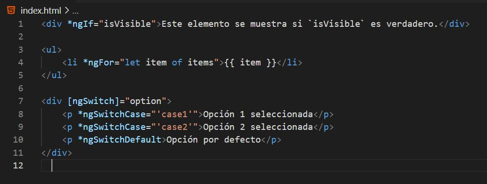
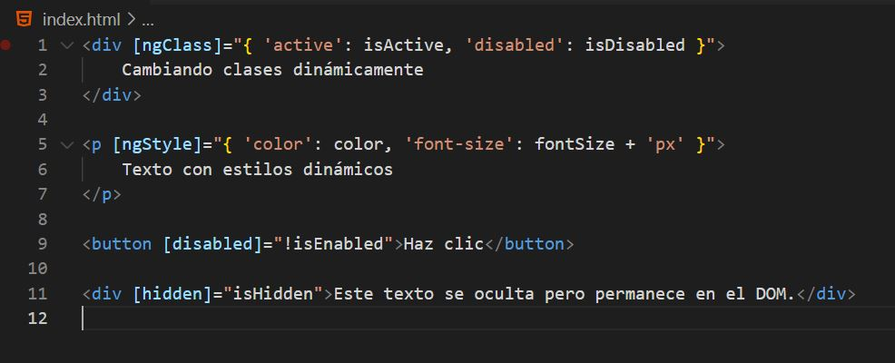

Son directivas que nos permiten controlar la estructura de nuestro HTML añadiendo, eliminando o manipulando elementos. Por ejemplo con lógica como if, for o switch.
En el caso del *ngIf podemos controlar cuando un elemento es visible o no, dependiendo de la condición.
En el caso del *ngFor podemos controlar la cantidad de veces que se repite un elemento, dependiendo de la condición o la cantidad de elementos.
En el caso del *ngSwitch podemos controlar el contenido de un elemento, dependiendo de la condición.
Son directivas que nos permiten controlar el comportamiento de nuestro HTML, modificando atributos y estilos.
En el caso del *ngClass podemos controlar la clase de un elemento, haciendo una clase dinamica, por ejemplo para cambiar un color.
En el caso del *ngStyle funciona parecido a *ngClass, pero modificando estilos en vez de clases.
Para los botones tenemos propiedades como [disabled] para desactivarlos o [hidden] para ocultarlos.
En resumen las directivas estructurales modifican la estructura del DOM (crean o eliminan elementos). y las directivas atributivas modifican atributos o estilos de elementos existentes sin alterar la estructura.